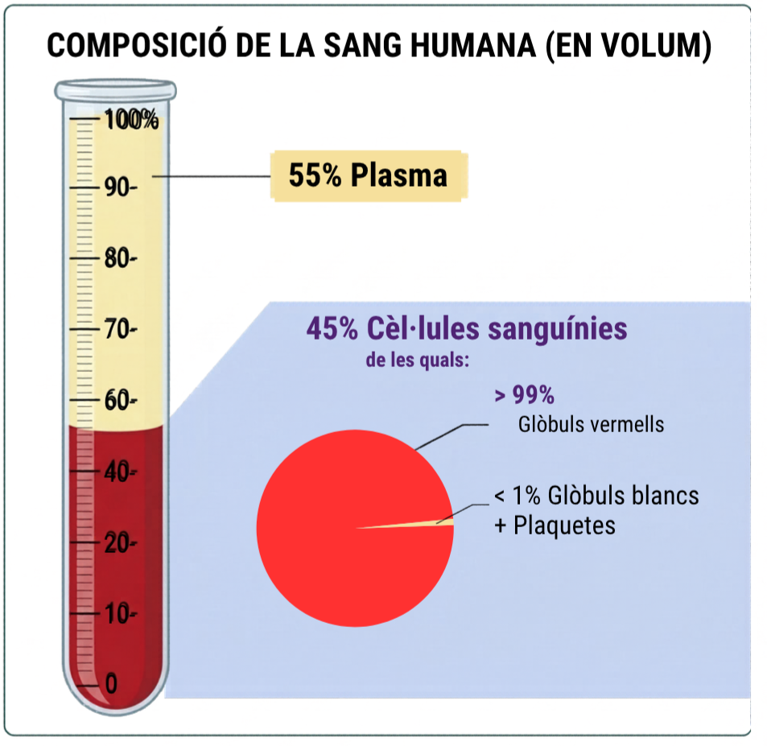
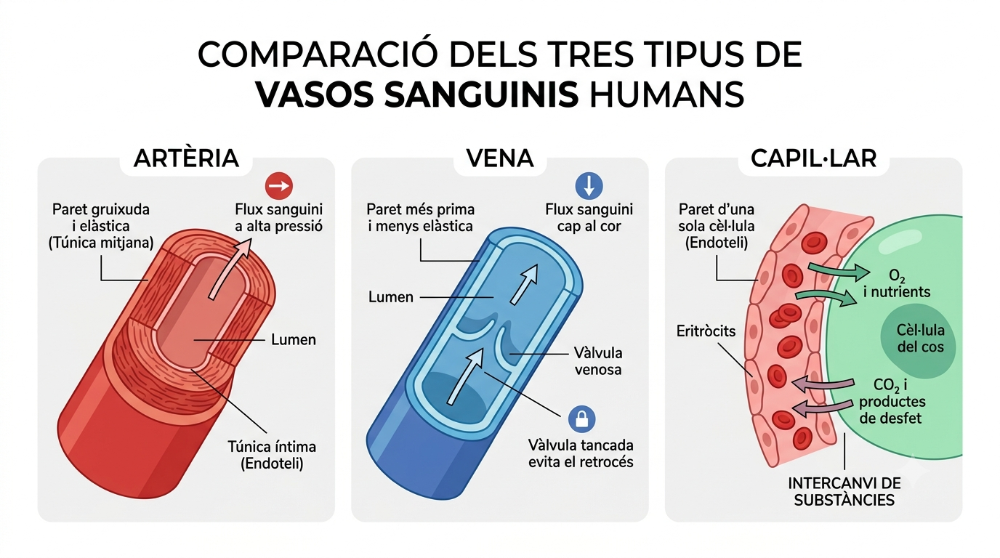

✕
بمفردك، أولًا من الذاكرة. ثم تحقّق من ذلك بأوراق الحصتين 1 و2.
📖 Paraules d'avui كلمات اليوم Mira la imatge, llegeix la paraula en català i en àrab. Torna aquí sempre que ho necessitis.
plasma
البلازما
la part líquida groga
eritròcit
كرية دم حمراء
glòbul vermell
leucòcit
كرية دم بيضاء
glòbul blanc · defensa
plaqueta
صفيحة دموية
tapa les ferides
hemoglobina
الهيموغلوبين
té ferro · agafa l'oxigen
cor
القلب
múscul que empeny la sang
pulmons
الرئتان
la sang hi agafa oxigen
capil·lar
وعاء دموي رفيع جدًا
vas molt prim
Altres paraules: sang = الدم · oxigen = الأكسجين · ferro = الحديد · anèmia = فقر الدم · artèria = شريان · vena = وريد · alvèols = الحويصلات الهوائية · pressió = الضغط · rang = المجال الطبيعي · cansat = متعب
✕
✏️ Paraules de les sessions 1 i 2 كلمات الحصتين 1 و2
1. Uneix amb una línia cada paraula en català amb la seva traducció.
صِل بخط بين كل كلمة بالكتالانية وترجمتها.
glucosa
الطاقة
intestí prim
الميتوكوندريا
vellositats
الغلوكوز
mitocondri
نتوءات صغيرة في جدار الأمعاء
energia
الأمعاء الدقيقة
2. Numera de l'1 al 4 el viatge de la glucosa.
رقّم من 1 إلى 4 رحلة الغلوكوز.
sangالدم
intestí primالأمعاء الدقيقة
mitocondriالميتوكوندريا
músculالعضلة
Al mitocondri, la cèl·lula n'obté .
ماذا تحصل عليه الخلية في الميتوكوندريا؟ اكتب بالكتالانية.
3. El ferro serveix per fabricar l'. Encercla un aliment que té ferro: llegums sucre
ماذا يصنع الجسم من الحديد؟ اكتب بالكتالانية. ضع دائرة حول الطعام الذي فيه حديد: البقوليات أو السكر.
✕
🔗
La glucosa i l'oxigen arriben a les cèl·lules per la
sang. El
Marc menja bé i, tot i així, es queda sense combustible a mig camí. Què hi ha dins la seva sang?
يصل الغلوكوز والأكسجين إلى الخلايا عبر الدم. مارك يأكل جيدًا، ومع ذلك ينفد وقوده في منتصف الطريق. ماذا يوجد في دمه؟
✕
✕
🤔 La meva hipòtesi فرضيتي
De cada 100 cèl·lules de la sang, quantes creus que són eritròcits? I leucòcits? Marca. No hi ha respostes dolentes: és el que penses ara.
من كل 100 خلية في الدم، كم تظن أن بينها كريات حمراء؟ وكم كرية بيضاء؟ ضع علامة. لا يوجد جواب خاطئ: هذا رأيك.
Eritròcitsالكريات الحمراء
menys de 10
unes 50
més de 90
Leucòcitsالكريات البيضاء
menys de 10
unes 50
més de 90
✕
✏️ Què has de fer ماذا عليك أن تفعل
Això és sang vista amb el microscopi. Llegeix la pista de cada número. Escriu el nom de la cèl·lula: busca'l al banc de paraules.
هذا دم تحت المجهر. اقرأ التلميح لكل رقم. اكتب اسم الخلية: ابحث عنه في بنك الكلمات.
✕
Banc de paraules
eritròcit
leucòcit
plaqueta
✕
1
N'hi ha moltíssimes. Són vermelles, sense nucli. Porten l'oxigen.كثيرة جدًا. لونها أحمر، بلا نواة. تنقل الأكسجين.
2
Més gran, amb nucli lila. Defensa el cos dels microbis.أكبر، نواتها بنفسجية. تدافع عن الجسم ضد الميكروبات.
3
Trossets molt petits. Tapen les ferides.قطع صغيرة جدًا. تسدّ الجروح.
✕
📖 Per llegir: les parts de la sang أجزاء الدم

Si fem girar la sang molt de pressa en un tub, es separa en dues parts:
• A dalt, un líquid groc: el plasma. És aigua amb glucosa, sals i altres coses.
• A baix, les cèl·lules de la sang.
إذا جعلنا الدم يدور بسرعة كبيرة في أنبوب، ينفصل إلى جزأين: في الأعلى سائل أصفر، هو البلازما. هو ماء فيه غلوكوز وأملاح وأشياء أخرى. في الأسفل خلايا الدم.
✏️ Què has de fer ماذا عليك أن تفعل
انظر إلى الأنبوب واكتب الرقم. ثم ارجع إلى فرضيتك: هل كانت صحيحة؟
Mira el tub: plasma % · cèl·lules %.
Gairebé totes les cèl·lules són .
La meva hipòtesi:l'he encertada
no l'he encertada
✕

Paraula nova: hemoglobina كلمة جديدة: الهيموغلوبين
Dins de cada eritròcit hi ha hemoglobina. És vermella i té ferro. Als pulmons s'enganxa a l'oxigen; als músculs el deixa anar.
داخل كل كرية حمراء يوجد الهيموغلوبين. لونه أحمر وفيه حديد. في الرئتين يلتصق بالأكسجين؛ وفي العضلات يتركه.
✕
🔑 Pregunta clau السؤال الأساسي
El 55% de la sang (el plasma) és groc. Per quina raó la sang sembla vermella? Encercla.
55% من الدم (البلازما) أصفر. فلماذا نرى الدم أحمر؟ ضع دائرة، ثم اكتب لماذا بالكتالانية.
Els eritròcits són vermells i n'hi ha moltíssimsالكريات الحمراء حمراء وعددها كبير جدًا
El plasma es torna vermell amb l'oxigenالبلازما تصبح حمراء مع الأكسجين
Els leucòcits pinten la sangالكريات البيضاء تلوّن الدم
La sang sembla vermella perquè els tenen , que és vermella, i n'hi ha .
✕
✕
📖 Per llegir: la doble circulació الدورة الدموية المزدوجة

🔵 Circulació petita (cor → pulmons → cor)
La sang va als
pulmons i agafa
oxigen. Va a pressió
baixa.
الدورة الصغرى (القلب ← الرئتان ← القلب): يذهب الدم إلى الرئتين ويأخذ الأكسجين. يسير بضغط منخفض.
🔴 Circulació gran (cor → tot el cos → cor)
La sang porta l'
oxigen a tots els òrgans. Va a pressió
alta.
الدورة الكبرى (القلب ← كل الجسم ← القلب): ينقل الدم الأكسجين إلى كل الأعضاء. يسير بضغط مرتفع.
Els pulmons tenen uns saquets molt fins, els alvèols. Amb molta pressió es trencarien.
في الرئتين أكياس رقيقة جدًا: هي الحويصلات الهوائية. مع ضغط كبير قد تتمزّق.
✕
✏️ Què has de fer ماذا عليك أن تفعل
Segueix amb el dit el camí de la sang a l'esquema. Completa les dues cadenes amb pulmons i tot el cos. Compta quantes vegades passa pel cor a cada volta.
تتبّع بإصبعك طريق الدم في الرسم. أكمل السلسلتين. عُدّ كم مرة يمرّ الدم بالقلب في كل دورة كاملة.
🔵 Petita الدورة الصغرى
cor dret→artèries pulmonars→→venes pulmonars→cor esquerre
🔴 Gran الدورة الكبرى
cor esquerre→aorta→→venes caves→cor dret
A cada volta, la sang passa vegades pel cor.
✕
✏️ Raono en 4 passos: per quina raó calen dues circulacions i no una de sola? أفكّر في 4 خطوات: لماذا دورتان وليس دورة واحدة؟
👁️ Observo · ألاحظ
La circulació gran va a pressió i la circulació petita va a pressió .
❓ Em pregunto · أتساءل
Per quina raó la sang que va als pulmons va a poca pressió?
🔗 Connecto · أربط
He llegit que els alvèols dels pulmons són molt i amb molta pressió es .
✅ Dedueixo · أستنتج
Per tant, calen dues circulacions perquè .
✕
🛤️ Els tres tipus de vasos الأنواع الثلاثة من الأوعية الدموية

Artèria
Surt del cor. Paret gruixuda i elàstica.الشريان: يخرج من القلب. جداره سميك ومرن.
Vena
Arriba al cor. Paret prima i vàlvules: la sang no tira enrere.الوريد: يصل إلى القلب. جداره رقيق وفيه صمّامات: الدم لا يرجع إلى الخلف.
Capil·lar
Molt prim: paret d'una sola cèl·lula. Aquí l'oxigen passa a les cèl·lules.الشعيرة الدموية: رفيعة جدًا، جدارها خلية واحدة فقط. هنا يمرّ الأكسجين إلى الخلايا.
La paret més gruixuda és la de: artèria vena capil·lar. És gruixuda perquè a dins hi ha molta .
انظر إلى الصورة. أي وعاء جداره الأسمك؟ ضع دائرة وأكمل بالكتالانية.
✕
💡 Idea clau
La sang fa dos circuits: el petit va als pulmons a poca pressió (per no trencar els alvèols); el gran va a tot el cos a molta pressió (per arribar lluny).
الدم يقوم بدورتين: الصغرى تذهب إلى الرئتين بضغط منخفض (حتى لا تتمزّق الحويصلات)؛ والكبرى تذهب إلى كل الجسم بضغط مرتفع (حتى تصل بعيدًا).
✕
✕
📖 Per llegir اقرأ
El Marc té 28 anys i corre. Darrerament es cansa molt. El metge li fa una analítica: mira què hi ha a la seva sang. Al costat de cada valor hi ha el rang: els valors normals d'una persona sana. Si el número del Marc és més petit que el rang, és Baix. Si és dins del rang, és Correcte.
مارك عمره 28 سنة ويركض. في الفترة الأخيرة يتعب كثيرًا. يُجري له الطبيب تحليل دم: ينظر ماذا يوجد في دمه. بجانب كل قيمة يوجد المجال الطبيعي: القيم الطبيعية لشخص سليم. إذا كان رقم مارك أصغر من المجال، فهو «منخفض»؛ وإذا كان داخل المجال، فهو «صحيح».
✕
✏️ Què has de fer ماذا عليك أن تفعل
Compara cada número del Marc amb el rang. Marca Baix o Correcte. La primera fila és l'exemple.
قارن كل رقم لمارك بالمجال الطبيعي. ضع علامة على «منخفض» أو «صحيح». السطر الأول هو المثال.
| Què mirem | Valor del Marc | Rang | Nivell? |
|---|
| Hemoglobinaالهيموغلوبين | 9,2 g/dL | 13,5–17,5 g/dL | 9,2 és més petit que 13,5 |
| Eritròcitsالكريات الحمراء | 3,8×10⁶/µL | 4,5–5,5×10⁶/µL | |
| Ferroالحديد | 38 µg/dL | 60–180 µg/dL | |
| Glucosaالغلوكوز | 88 mg/dL | 70–110 mg/dL | |
| Ureaاليوريا (من فضلات البروتينات) | 34 mg/dL | 15–45 mg/dL | |
| Creatininaالكرياتينين (من فضلات العضلات) | 0,9 mg/dL | 0,7–1,3 mg/dL | |
✕
🔍 Completa el diagnòstic أكمل التشخيص
Completa la cadena amb aquestes paraules: ferro · hemoglobina · oxigen.
أكمل السلسلة بهذه الكلمات: الحديد، الهيموغلوبين، الأكسجين.
poc →poca →arriba poc als músculs→es cansa
Diagnòstic: anèmia ferropènica (anèmia per falta de ferro). Tractament: suplements de ferro + vitamina C, que ajuda a absorbir el ferro.
التشخيص: فقر دم بسبب نقص الحديد (أنيميا). العلاج: حبوب الحديد وفيتامين C، الذي يساعد على امتصاص الحديد.
✕
💡 Idea clau
Sense ferro no hi ha prou hemoglobina, i sense hemoglobina els músculs no reben prou oxigen: per això apareix la fatiga.
بدون حديد لا يوجد ما يكفي من الهيموغلوبين، وبدون هيموغلوبين لا تصل إلى العضلات كمية كافية من الأكسجين: لهذا يظهر التعب.
✕
✕
📚 Tasca per a casa · cada dia 10 minuts: ① llegeix una targeta en català · ② si no l'entens, llegeix l'àrab · ③ tapa-la i explica-la en veu alta en català · ④ al final del full, marca ✔ quan ho sàpigues. Per a la propera classe: pren-te el pols en repòs (sense haver fet exercici l'última hora), al coll o al canell: compta els batecs durant 30 segons i multiplica per 2. Porta el número a la Sessió 4.
واجب البيت، كل يوم 10 دقائق: 1) اقرأ بطاقة واحدة بالكتالانية. 2) إذا لم تفهمها، اقرأ العربية. 3) غطِّ البطاقة واشرحها بصوت عالٍ بالكتالانية. 4) في آخر الورقة، ضع ✔ عندما تحفظها. للحصة القادمة: قِس نبضك وأنت مرتاح (دون تمرين في الساعة الأخيرة)، على الرقبة أو المعصم: عُدّ الدقات لمدة 30 ثانية واضرب في 2. أحضر الرقم.
✕
1Què hi ha dins la sangماذا يوجد داخل الدم
Plasma (55%): líquid groc, porta glucosa, sals i CO₂. Glòbuls vermells (44%): porten l'oxigen. Glòbuls blancs: defensen el cos. Plaquetes: tapen les ferides. Glòbuls blancs + plaquetes = menys de l'1%.
البلازما (55%): سائل أصفر، ينقل الغلوكوز والأملاح وثاني أكسيد الكربون. الكريات الحمراء (44%): تنقل الأكسجين. الكريات البيضاء: تدافع عن الجسم. الصفائح الدموية: تسدّ الجروح. الكريات البيضاء والصفائح معًا أقل من 1%.
✕
2L'hemoglobina i el ferroالهيموغلوبين والحديد
pulmons: l'hemoglobina agafa O₂→sang vermella intensa→músculs: deixa anar l'O₂
Els glòbuls vermells són plens de hemoglobina, una proteïna vermella que té ferro. Per això la sang és vermella, encara que el plasma sigui groc. Sense ferro, el cos no pot fer prou hemoglobina, i arriba menys oxigen als músculs.
الكريات الحمراء مليئة بالهيموغلوبين، وهو بروتين أحمر فيه حديد. لهذا الدم أحمر، مع أن البلازما صفراء. في الرئتين يأخذ الهيموغلوبين الأكسجين وفي العضلات يتركه. بدون حديد لا يستطيع الجسم صنع ما يكفي من الهيموغلوبين، فيصل أكسجين أقل إلى العضلات.
✕
3La doble circulacióالدورة الدموية المزدوجة
🔵 petita: cor dret→artèria pulmonar→pulmons→cor esquerre
🔴 gran: cor esquerre→aorta→tot el cos→venes caves → cor dret
La sang passa dues vegades pel cor a cada volta. El circuit petit va a pressió baixa (els alvèols són fràgils); el gran, a pressió alta.
الدورة الصغرى: القلب الأيمن ← الشريان الرئوي ← الرئتان ← القلب الأيسر. الدورة الكبرى: القلب الأيسر ← الأبهر ← كل الجسم ← الوريدان الأجوفان ← القلب الأيمن. في كل دورة كاملة يمرّ الدم بالقلب مرتين. الصغرى تسير بضغط منخفض (الحويصلات هشّة)؛ والكبرى بضغط مرتفع.
✕
4Artèries, venes i capil·larsالشرايين والأوردة والشعيرات الدموية
Artèria: surt del cor, paret gruixuda i elàstica, pressió alta. Vena: arriba al cor, paret prima, té vàlvules, pressió baixa. Capil·lar: paret d'una sola cèl·lula; aquí l'oxigen i els nutrients passen a les cèl·lules. Compte: el nom depèn del sentit, no del color. L'artèria pulmonar porta sang sense oxigen!
الشريان: يخرج من القلب، جداره سميك ومرن، ضغط مرتفع. الوريد: يصل إلى القلب، جداره رقيق، فيه صمّامات، ضغط منخفض. الشعيرة الدموية: جدارها خلية واحدة؛ هنا يمرّ الأكسجين والمواد الغذائية إلى الخلايا. انتبه: الاسم يعتمد على الاتجاه، لا على اللون. الشريان الرئوي ينقل دمًا بلا أكسجين!
✕
5L'anèmia del Marcفقر الدم عند مارك
poc ferro→poca hemoglobina→menys O₂ als músculs→cansament
El Marc tenia la hemoglobina a 9,2 (normal: més de 13) i el ferro baix. Això és una anèmia ferropènica: la sang porta menys oxigen. Es cura menjant aliments amb ferro i vitamina C (o amb pastilles de ferro, si ho diu el metge).
حديد قليل ← هيموغلوبين قليل ← أكسجين أقل للعضلات ← تعب. كان هيموغلوبين مارك 9,2 (الطبيعي: أكثر من 13) والحديد منخفضًا. هذا فقر دم بسبب نقص الحديد: الدم ينقل أكسجينًا أقل. يُعالَج بأطعمة فيها حديد وفيتامين C (أو بحبوب الحديد، إذا قال الطبيب).
✕
✔ Ho sé explicar? Prepara l'examen · respon en veu alta, en català هل أستطيع أن أشرحه؟
Quines 4 coses hi ha dins la sang? Què fa cadascuna? (targeta 1)ما هي الأشياء الأربعة داخل الدم؟ ماذا يفعل كل منها؟
Per quina raó la sang és vermella si el plasma és groc? (2)إذا كانت البلازما صفراء، فلماذا الدم أحمر؟
Explica els dos circuits de la sang. Per quina raó el petit va a poca pressió? (3)اشرح دورتي الدم. لماذا تسير الصغرى بضغط منخفض؟
Diferència entre artèria, vena i capil·lar. (4)الفرق بين الشريان والوريد والشعيرة الدموية.
Per quina raó el Marc es cansava? (5)لماذا كان مارك يتعب؟